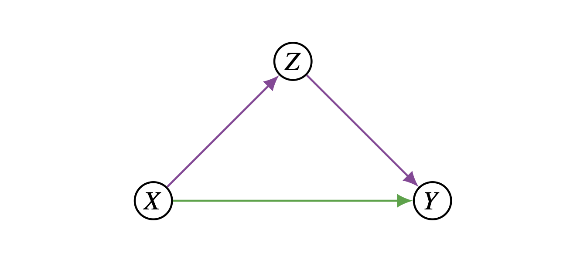
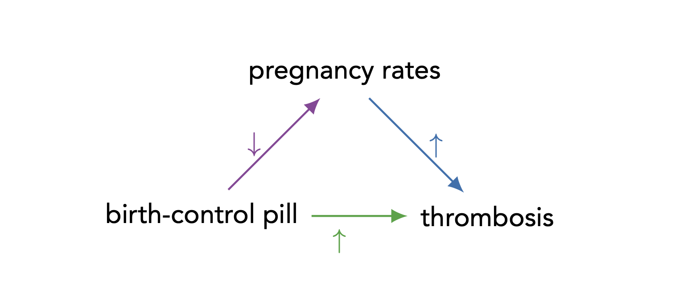
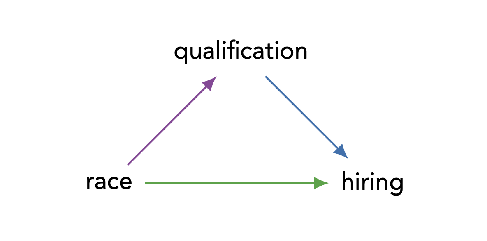
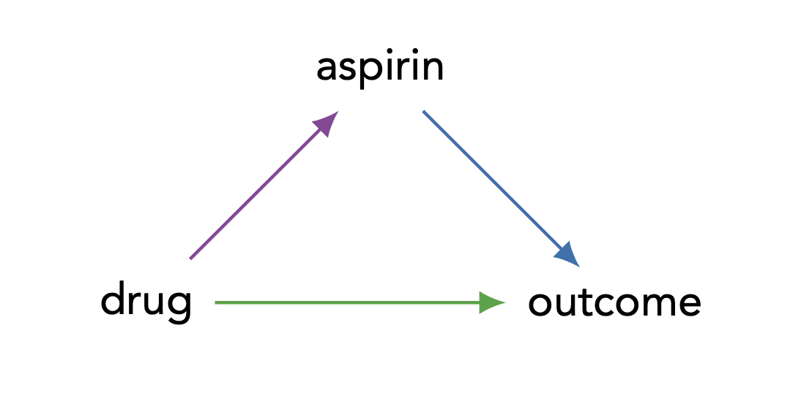

Introduction
- 인과추론(Causal Inference)의 핵심 목표 중 하나는 단순히 “X가 Y에 영향을 미치는가?”를 넘어, “X가 어떤 경로(Mechanism)를 통해 Y에 영향을 미치는가?”를 이해하는 것입니다.
- 이를 위해 우리는 총 효과(Total Effect)를 직접 효과(Direct Effect)와 간접 효과(Indirect Effect)로 분해(Decomposition)하고자 합니다.
- 본 포스트는 비선형 시스템(Nonlinear System)에서의 효과 분해와 Controlled Direct Effect (CDE) 및 Natural Direct Effect (NDE)의 개념적 차이를 정리합니다.
1. Problem Setup & Notation
1.1. Causal Graph (Mediation Triangle)
- 가장 기본적인 매개 모형(Mediation Model)은 다음과 같은 DAG(Directed Acyclic Graph)로 표현됩니다.

- \(X\): 원인 변수 (Input / Treatment)
- \(Z\): 매개 변수 (Intermediate variable / Mediator)
- \(Y\): 결과 변수 (Output / Outcome)
1.2. Total Effects (TE)
- 총 효과(Total Effect)는 외부 개입(External Intervention) \(do(X=x)\)가 가해졌을 때, \(Y\)가 \(y\)일 확률의 변화로 정의됩니다.
\[ P(Y_x = y) = P(y | do(x)) \]
- 이는 \(X\)가 변할 때 \(Z\)를 통한 경로와 직접 경로를 모두 포함한 \(Y\)의 전체적인 변화 양상을 나타냅니다.
2. Direct Effects: Definition & Challenge
2.1. Conceptual Definition
- 직접 효과(Direct Effect)의 직관적인 정의는 “모델 내 다른 변수들에 의해 매개되지 않는 영향(influence not mediated by other variables)”입니다.
- 조금 더 형식적으로는, “모든 다른 요인들을 고정한 상태(holding fixed)에서 \(X\)의 변화에 대한 \(Y\)의 민감도”라고 정의할 수 있습니다.
- 그래프 관점에서 보면, 이는 \(X \to Z \to Y\)와 같은 모든 간접 경로를 차단하고, 오직 직접 경로 \(X \to Y\)만 남겨두었을 때의 효과를 의미합니다.
2.2. Linear vs. Nonlinear Systems
- 선형 시스템(Linear System)에서는 간접 효과를 단순히 “총 효과 - 직접 효과”로 정의할 수 있습니다. \[ \text{Indirect Effect} = \text{Total Effect} - \text{Direct Effect} \quad (\text{in Linear}) \]
- 하지만 비선형 시스템(Nonlinear System)에서는 변수들을 단순히 상수로 고정하는 것만으로는 간접 효과를 정확히 측정할 수 없으며, 고정하는 값(reference value)에 따라 효과의 크기가 달라지는 문제가 발생합니다.
- 이로 인해 “간접 효과”의 정의가 불완전해질 수 있습니다.
3. Motivation: Why Distinguish Direct Effects?
- 왜 우리는 굳이 총 효과를 쪼개서 직접 효과를 보려고 할까요? 아래는 세 가지 주요 예시를 통해 그 동기를 설명합니다.
3.1. Transportability (Birth Control Pill)

- 피임약 사례에서:
- Direct Path: 피임약 성분이 혈액에 직접 작용하여 혈전증 위험 증가.
- Indirect Path: 피임약 복용 \(\to\) 임신 감소 \(\to\) (임신으로 인한) 혈전증 위험 감소.
- 여기서 직접 효과는 생물학적 메커니즘에 기반하므로 사회적 요인(예: 결혼 여부, 문화적 배경 등)에 불변(Invariant)할 가능성이 높습니다.
- 반면 총 효과는 사회적 요인에 따라 달라지는 ’임신율’에 의존합니다.
- 따라서 직접 효과가 정책 분석이나 과학적 설명에 있어 더 이식성(Transportability)이 높고 유용합니다.
3.2. Legal Liability (Hiring Discrimination)

- 채용 차별 소송(Title VII 등)에서는 “자격 요건(Qualification)”을 매개로 한 간접 효과(예: 교육 기회의 불평등으로 인한 자격 미달)보다는, 채용 결정에 있어서의 직접적인 효과(Direct Effect)에 관심을 둡니다.
- 법적인 질문은 다음과 같습니다:
- “다른 모든 조건이 동일할 때(all else being equal), 지원자의 인종이 달랐더라도 고용주가 같은 결정을 내렸을 것인가?”
3.3. Side Effects (Aspirin Example)
- 약물(Drug)이 두통(Headache)이라는 부작용을 일으키고, 이로 인해 환자가 아스피린(Aspirin)을 복용하여 치료 결과(Outcome)에 영향을 주는 상황입니다.

- 이때 제약회사는 아스피린 복용 여부와 무관한 약물의 순수한 효능(직접 효과)을 입증하고 싶을 수도 있고, 반대로 아스피린 복용까지 포함한 실제 임상 환경에서의 효과(총 효과)를 알고 싶을 수도 있습니다.
4. Formalizing Direct Effects: Prescriptive vs. Descriptive
- 비선형 시스템에서 직접 효과를 정의할 때, 매개 변수 \(Z\)를 어떤 값으로 고정하느냐에 따라 두 가지 중요한 개념으로 나뉩니다.
4.1. Prescriptive Formulation (Controlled Direct Effect, CDE)
- “처방적(Prescriptive)” 해석은 정책적으로 \(Z\)를 특정 값 \(z\)로 강제 고정(Controlled)했을 때의 효과를 의미합니다.
- 정의: 매개변수 \(Z\)를 특정 수준 \(z\)로 고정(Intervention)한 상태에서, \(X\)를 \(x^*\)에서 \(x\)로 바꿀 때 \(Y\)의 변화량.
- 수식: \[ CDE(z) = P(Y_{x, z} = y) - P(Y_{x^*, z} = y) \]
- 의미: “모든 환자에게 아스피린 복용을 강제(\(Z=z\))한다면, 치료(\(X\))가 결과(\(Y\))에 미치는 효과는 무엇인가?”. 실제 환자의 자율적인 아스피린 복용 성향은 무시됩니다.
- 특징: 선형 시스템에서는 \(z\) 값에 상관없이 일정하지만, 비선형 시스템에서는 \(z\)의 레벨에 따라 효과가 달라집니다.
4.2. Descriptive Formulation (Natural Direct Effect, NDE)
“서술적(Descriptive)” 해석은 인위적인 개입 없이, 자연스러운 상태에서의 효과를 설명하려 합니다.
정의: \(X\)가 \(x^*\)에서 \(x\)로 변할 때, \(Z\)는 개입이 없을 때(\(X=x^*\)) 자연스럽게 가졌을 값으로 유지한 상태에서의 \(Y\)의 변화량.
수식: \[ NDE = P(Y_{x, Z(x^*)} = y) - P(Y_{x^*, Z(x^*)} = y) \]
- 여기서 \(Z(x^*)\)는 \(X=x^*\)일 때 개인이 자연적으로 갖게 되는 \(Z\)의 값을 의미합니다.
의미: “치료를 받지 않았을 때(\(x^*\)) 환자가 복용했을 아스피린 양(\(Z(x^*)\))을 그대로 유지한다고 가정할 때, 치료(\(x\)) 자체가 결과에 미치는 영향은 무엇인가?”.
필요성: 이 개념은 개인의 자연적인 행동(Natural behavior)에 대한 지식을 필요로 합니다.
4.3. Comparison: Why NDE matters?
어떤 환자는 치료를 받을 때만(\(X=x\)) 두통 때문에 아스피린을 먹고, 아스피린이 있어야만 치료 효과가 나타난다고 가정해 봅시다.
- NDE 관점: 치료를 받지 않은 상황(\(x^*\))을 기준(baseline)으로 하면, 이 환자는 아스피린을 먹지 않았을 것입니다(\(Z(x^*)=\text{no aspirin}\)). 이 상태로 고정하고 치료만(\(x\)) 하면, 아스피린이 없으므로 치료 효과가 없습니다. 즉, NDE = 0입니다.
- CDE 관점: 만약 우리가 강제로 아스피린을 먹인다면(\(Z=\text{aspirin}\)), 치료 효과가 나타납니다. 즉, CDE \(\neq\) 0입니다.
언제 무엇을 쓰는가?
- CDE (Prescriptive): 전체 인구에게 특정 수준의 매개변수(예: 아스피린 용량)를 정책적으로 규정할 때 유용합니다.
- NDE (Descriptive/Attributional): 관찰된 결과가 순수하게 치료 자체 때문인지, 아니면 치료로 인해 바뀐 매개변수(아스피린 복용) 때문인지를 귀인(Attribution)할 때 유용합니다. 제약회사가 부작용(두통)을 없앴을 때 여전히 약효가 있을지를 판단하려면, 사람마다 제각각인 아스피린 복용 성향을 반영한 평균적인 자연 직접 효과(Average NDE)를 봐야 합니다.
5. Indirect Effects
- 직접 효과의 정의가 명확해지면, 간접 효과(Indirect Effect) 역시 이에 상응하여 정의할 수 있습니다.
5.1. Challenge in Prescriptive Definition
- 간접 효과는 “처방적(Prescriptive)”으로 정의하기 어렵습니다.
- \(X\)가 \(Y\)에 미치는 영향을 \(Z\)를 통해서만 전달되도록 하려면, 직접 경로 \(X \to Y\)를 차단해야 하는데, 이를 위해 변수를 고정(holding constant)하는 방식으로는 불가능하기 때문입니다.
- 직접 경로를 차단하려고 \(X\)를 고정하면 간접 경로의 시작점도 고정되어 버립니다.
5.2. Descriptive Interpretation (Natural Indirect Effect, NIE)
따라서 간접 효과는 주로 서술적(Descriptive) 관점에서 정의됩니다.
아이디어: \(X\)는 \(x^*\) (대조군 상태)로 묶어두어 직접 효과를 차단합니다. 그 상태에서 \(Z\)만 “\(X\)가 \(x\) (처치군)로 변했을 때 변했을 법한 값 \(Z(x)\)”로 변화시킵니다.
수식: \[ NIE = P(Y_{x^*, Z(x)} = y) - P(Y_{x^*, Z(x^*)} = y) \]
해석:
- 채용 차별 예시로 들자면, “성별을 묻는 것을 금지하여(\(x^*\)) 성별에 따른 직접적 차별을 막더라도, 자격 요건(\(Z\))이 성별에 따라 달라짐(\(Z(x)\))으로 인해 발생하는 잔여 채용 격차는 얼마인가?”를 묻는 것과 같습니다.
- 이는 정책 도입 전 데이터로부터 평균 간접 효과(Average Indirect Effects)를 추정하는 문제가 됩니다.
6. Summary
- 본 포스트에서는 비선형 인과 모형에서 효과를 분해하는 두 가지 관점을 살펴보았습니다.
| 구분 | Prescriptive (Controlled) | Descriptive (Natural) |
|---|---|---|
| Direct Effect | CDE: \(Z\)를 특정 상수 \(z\)로 강제 고정. \(P(Y_{x,z}) - P(Y_{x^*,z})\) |
NDE: \(Z\)를 \(X=x^*\)일 때의 자연적 수준 \(Z(x^*)\)로 유지. \(P(Y_{x,Z(x^*)}) - P(Y_{x^*,Z(x^*)})\) |
| Indirect Effect | 정의하기 어려움 (불가능) | NIE: \(X=x^*\)로 고정하되, \(Z\)만 \(Z(x)\)로 변화시킴. \(P(Y_{x^*,Z(x)}) - P(Y_{x^*,Z(x^*)})\) |
| 주요 활용 | 정책적 개입(Intervention), 프로토콜 수립 | 현상의 설명(Explanation), 원인 귀속(Attribution), 차별 분석 |